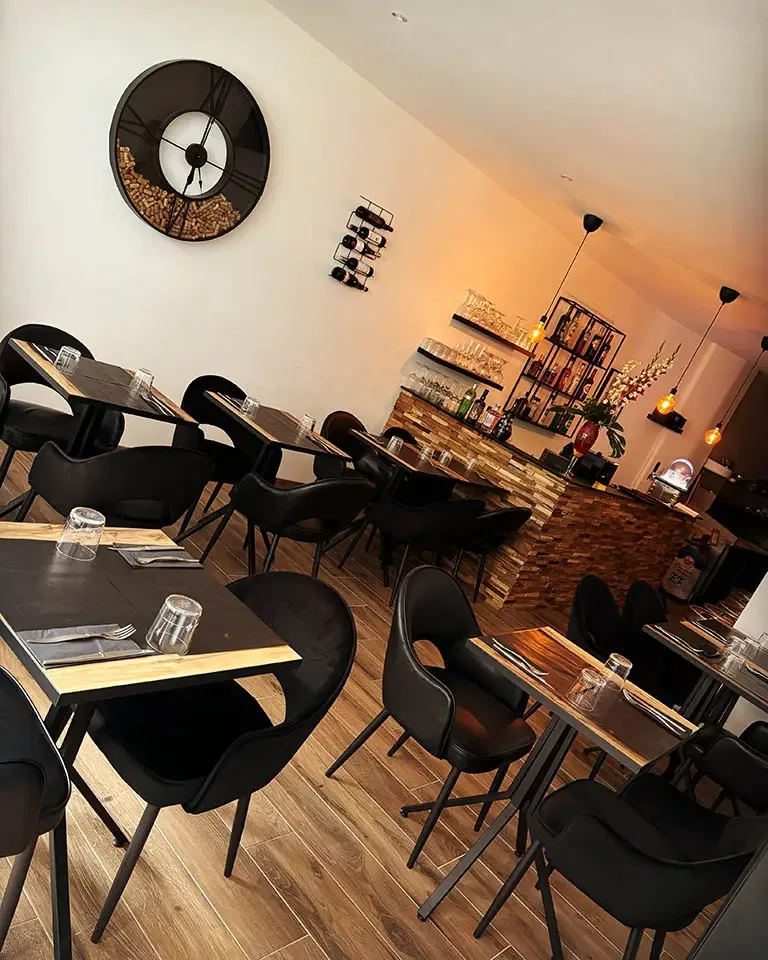
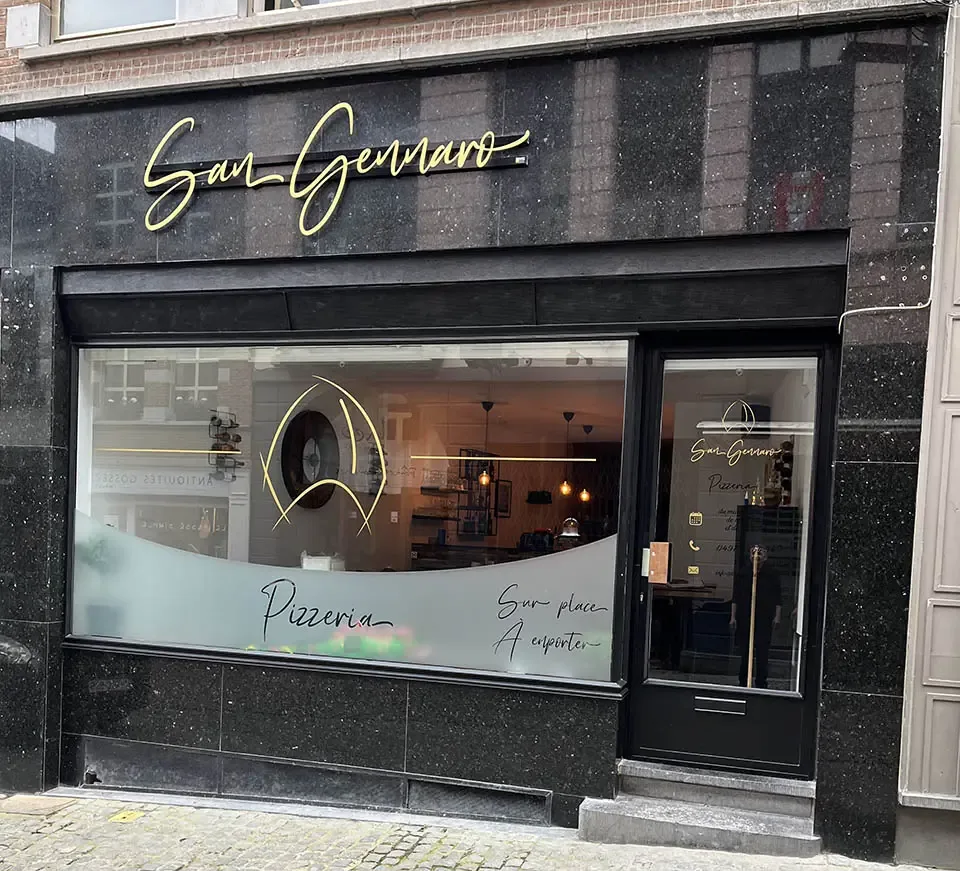
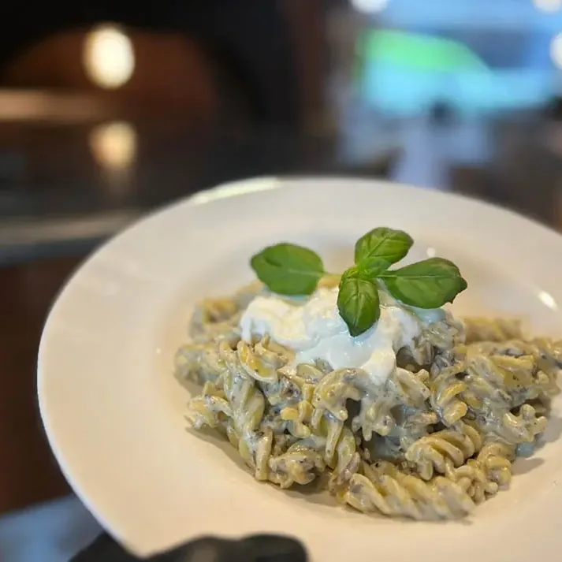
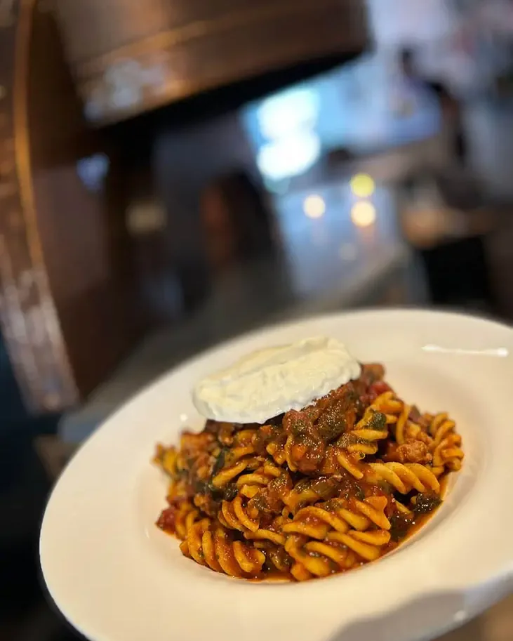
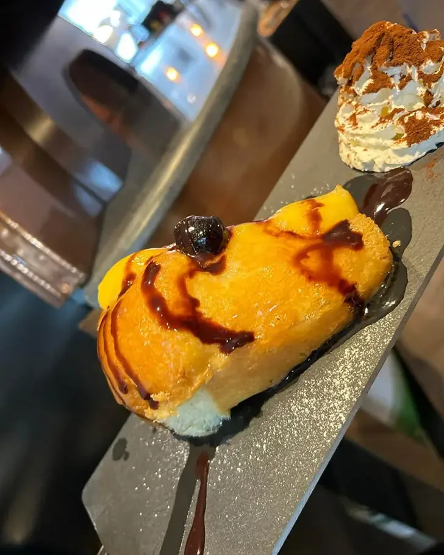
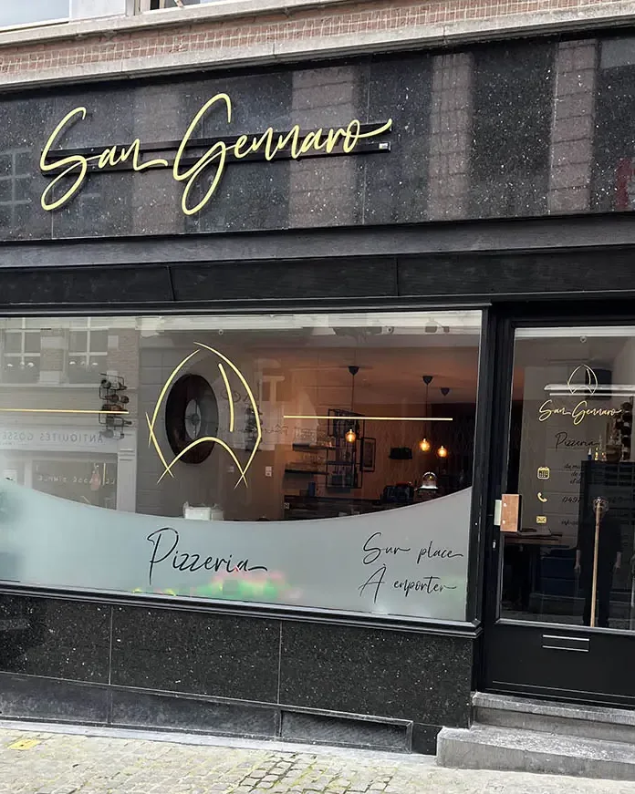
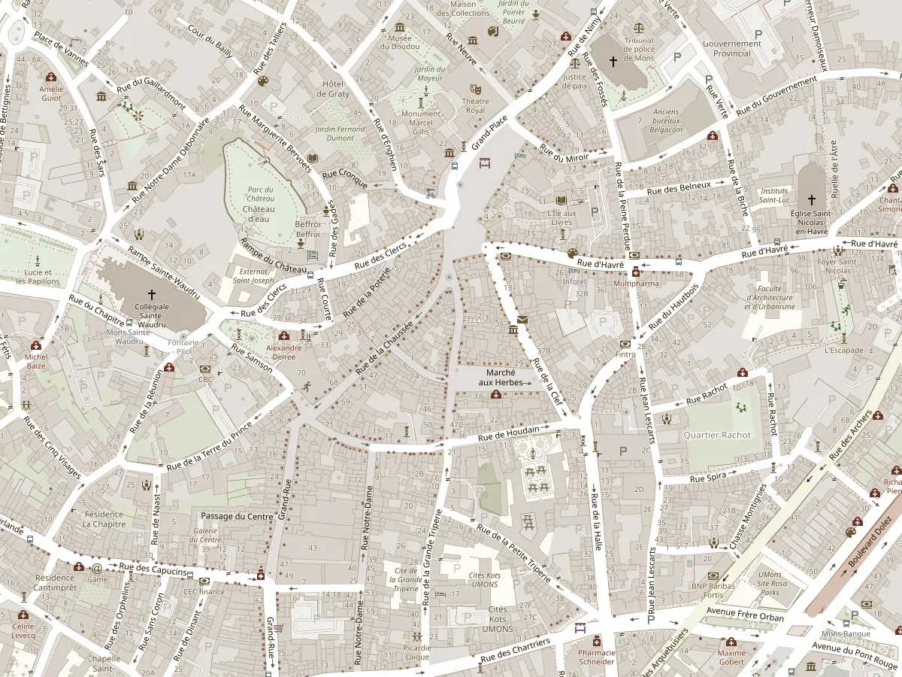

Pizzeria · Pâtes fraîches · Spécialités italiennes
San Gennaro
MONS
L'authenticité italienne à chaque bouchée. Pizzas, pâtes et spécialités préparées avec passion, rue de la Coupe, à deux pas de la Grand-Place.
Du mardi au samedi, 18 h – 22 h
- Sur place et à emporter
- Pizza en platine pour vos évènements



Bienvenue chez San Gennaro
Pizzas, pâtes et spécialités italiennes préparées avec passion, dans une ambiance chaleureuse et conviviale.
- Sur place et à emporterUne soirée en salle, ou vos pizzas à la maison.
- En salle ou à l'extérieurUne préférence ? Il suffit de la noter en réservant.
- Groupes et évènementsPizza en platine et menu sur mesure, pour tout type d'évènement.



Réserver une table
Le soir, l'heure, le nombre de couverts : votre table est demandée en trente secondes.
Ce que les clients en disent
Extrait de la carte
Pâtes fraîches, pizzas et spritz : une sélection, prix tels qu'affichés par la maison.
Pâtes fraîches
Rigatoni pistache et speckspeck croustillant, stracciatella de burrata, pesto et éclats de pistache23,00 €
Bucatini all'amatricianaguanciale, sauce Napoli, stracciatella de burrata21,00 €
Calamarata alla norcinasaucisse italienne poivrée, sauce crème, truffe22,00 €
Paccheri alla salsicciasaucisse italienne poivrée, sauce Napoli, parmigiano reggiano, basilic frais22,00 €
Linguine aux scampisscampis à l'ail, tomates cerises, roquette, copeaux de parmesan23,00 €
Spaghettis à la bolognaisesauce bolognaise maison, parmigiano reggiano17,00 €
Escalopes de veau
Escalope San Gennaropanée, roquette, tomates cerises, mozzarella di bufala, crème balsamique ; paccheri sauce Napoli ou croquettes29,00 €
Escalope milanaisepanée ; paccheri sauce Napoli ou croquettes23,00 €
Pizzas
San Gennarosauce tomate, mozzarella di bufala, tomates cerises, basilic17,00 €
Margheritasauce tomate, mozzarella12,50 €
Diavolasauce tomate, mozzarella, salami piquant (ventricina), oignons16,50 €
Veronasauce tomate, mozzarella, tomates cerises, jambon di San Daniele, roquette, parmesan, crème balsamique18,00 €
Guancialesauce tomate, mozzarella di bufala, guanciale, ricotta fraîche, éclats de pistaches18,00 €
Mortadellamozzarella, pesto de pistache, mortadella, éclats de pistaches, basilic18,50 €
Tartufomozzarella, crème de truffe, roquette, parmigiano reggiano, burrata18,00 €
Calzone classiquesauce tomate, mozzarella, jambon cuit, salami piquant (ventricina), champignons17,00 €
Et aussi : Napoli, Parmigiana, Capricciosa, 4 Fromages, Scampis, Carpaccio, Vesuvio, San Daniele…
Spritz et apéritifs
Aperol SpritzAperol, prosecco, eau gazeuse, rondelle d'orange11,00 €
Limoncello Spritzlimoncello, prosecco, eau gazeuse, rondelle de citron11,00 €
Hugo Spritzprosecco, sirop de fleur de sureau, eau gazeuse, feuille de menthe11,00 €
NegroniCampari, gin, martini rouge, rondelle d'orange11,00 €
Dolce vitaamaretto, Cointreau, gin, jus d'orange11,00 €
Gin Malfirosa, limone ou arancia13,00 €
Gin Mare13,50 €
Moretti au fût4,00 €
Vins : bianco, rosato, rosso. Et aussi Duvel, Leffe, San Pellegrino…
Extrait de la carte publiée sur sangennaro.be · sur place et à emporter
Une fête, un anniversaire, une équipe ?
Pizza en platine et menu sur mesure pour tout type d'évènement.
Réservation de groupe : pour toute réservation de plus de 7 personnes, un acompte est demandé afin de confirmer et garantir la réservation.
Horaires et accès
| lundi | fermé |
|---|---|
| mardi | 18 h – 22 h |
| mercredi | 18 h – 22 h |
| jeudi | 18 h – 22 h |
| vendredi | 18 h – 22 h |
| samedi | 18 h – 22 h |
| dimanche | fermé |

Itinéraire © OpenStreetMap